Three ways to put bodies into the pastel washes. Pick a row, or a mix, and I apply it to the shelves. Back to the plain washes · sample A · Main Page.
The September figures (the pair of soft bodies you approved then), pushed into the new pastel hues so they survive fading.
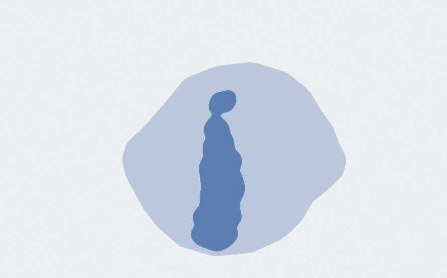
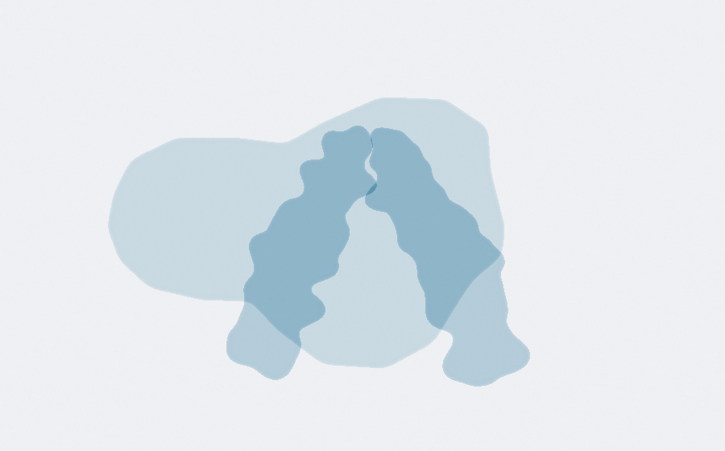
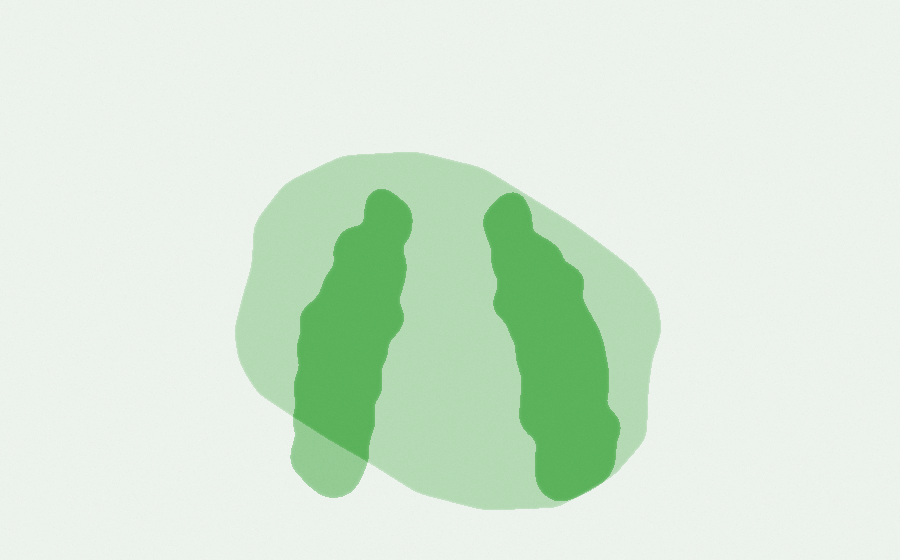
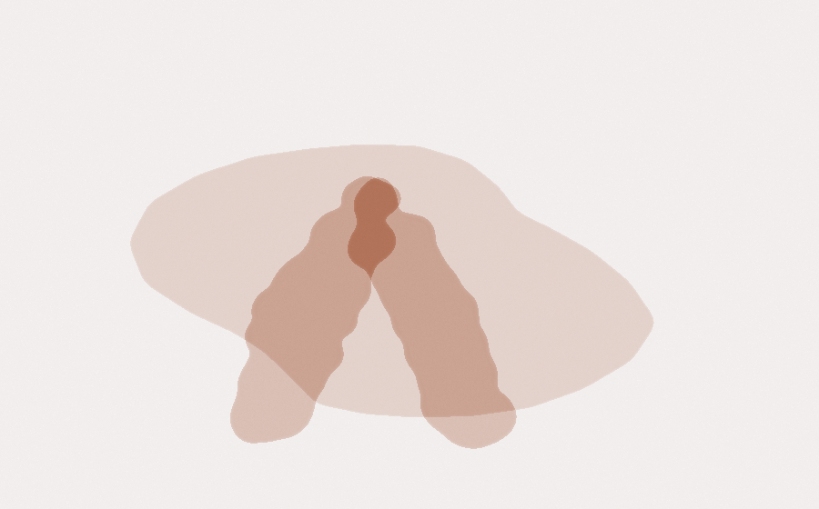
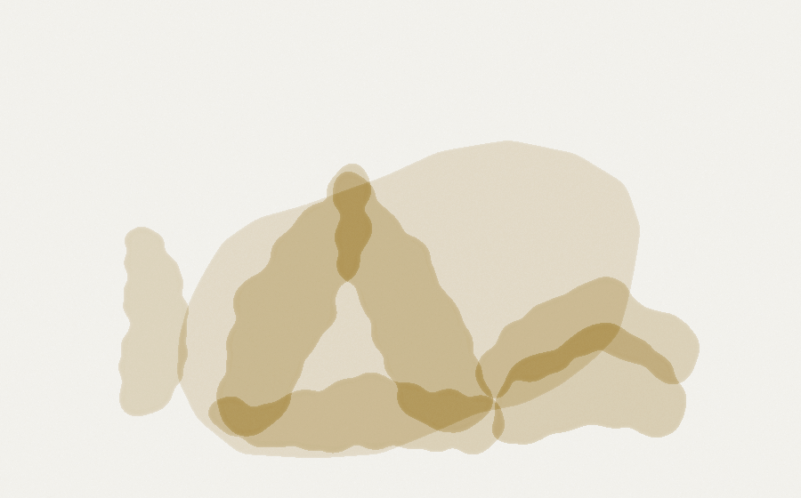
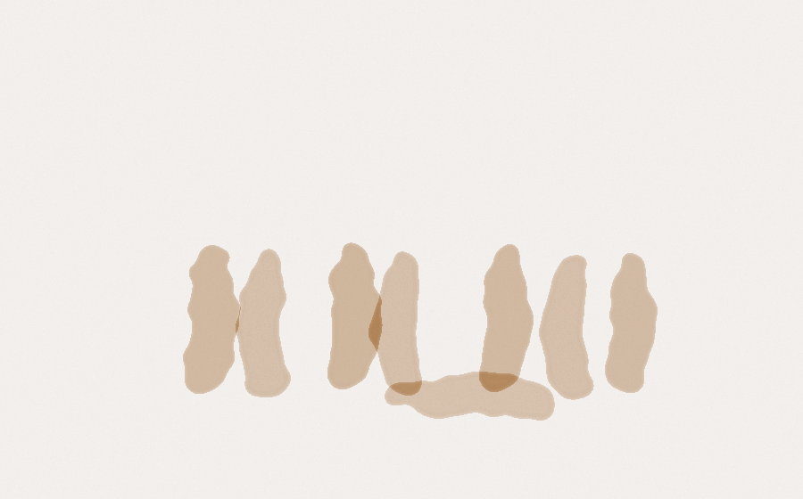
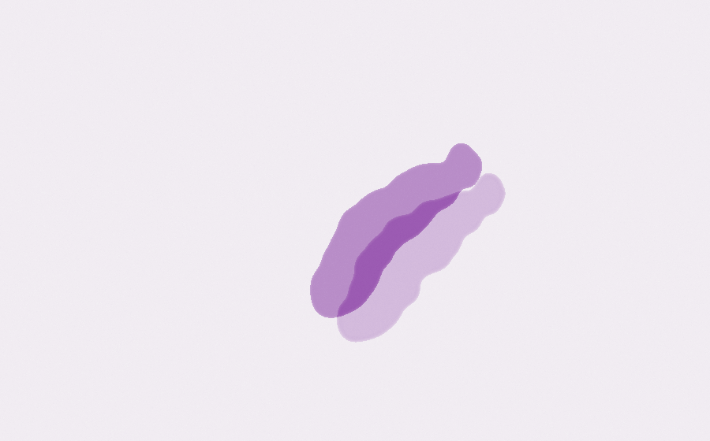
Five Contact Improvisation moments as ghost figures: the stand, lean, counterbalance, the lift, the roll. Deliberately crude; if the idea works I refine the drawing.
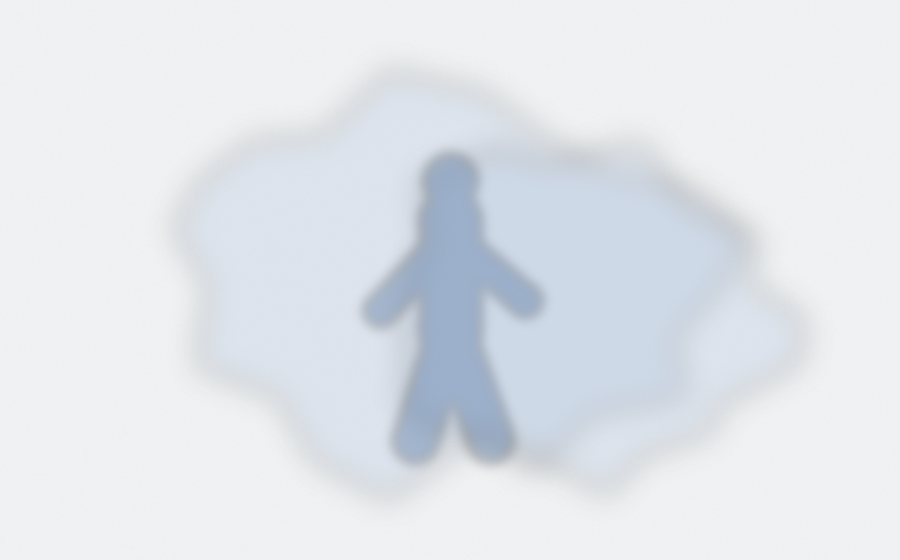
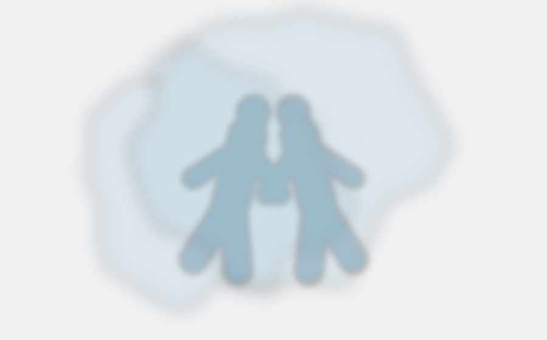
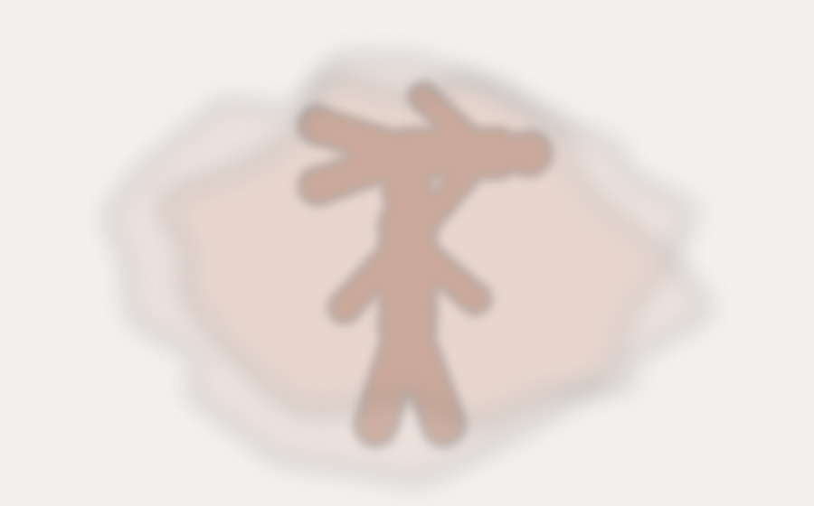
Your "beauty of pain" photos reduced to a few tones and washed in a pastel. Real bodies, real dances, still abstract enough to sit behind a table.
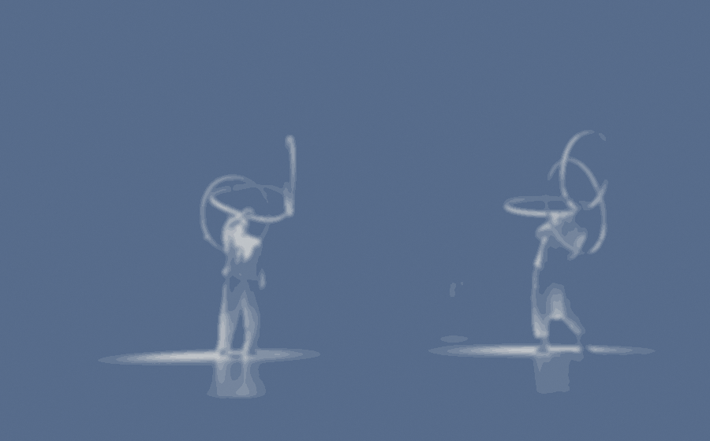
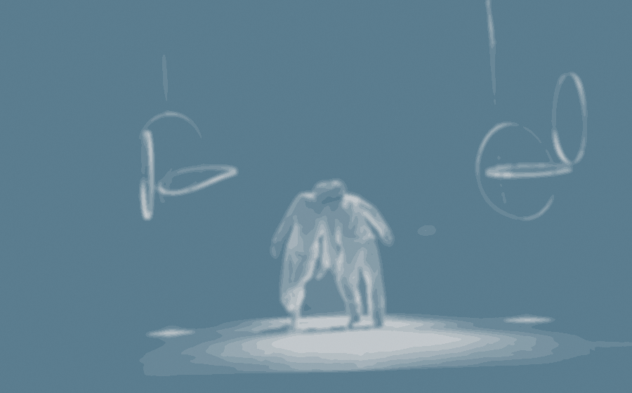
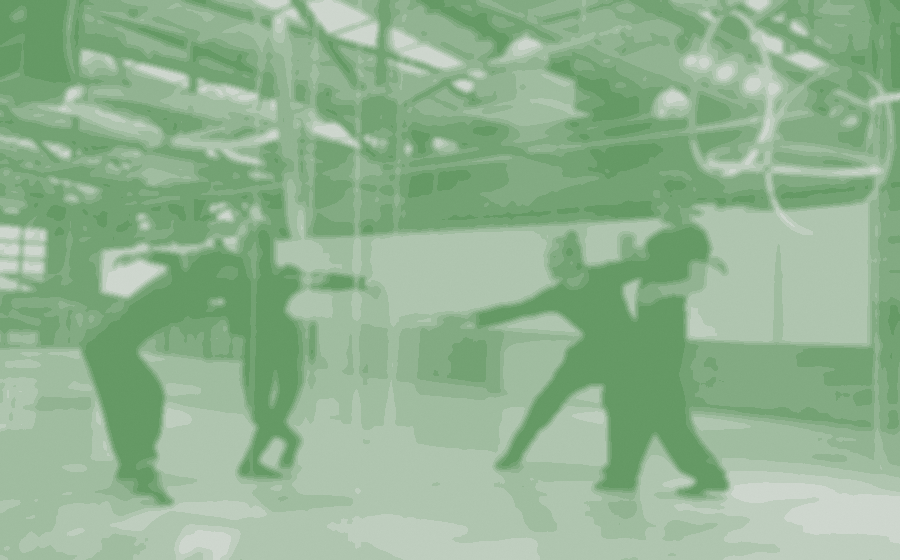
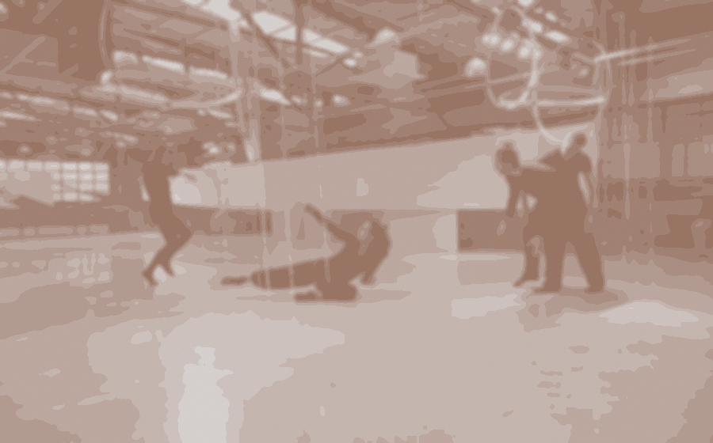
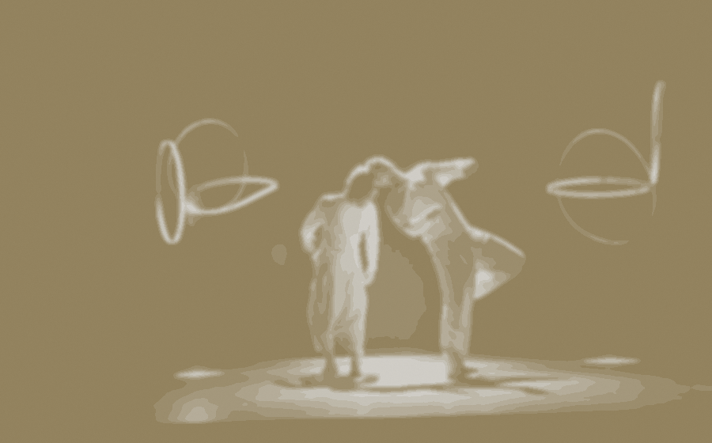
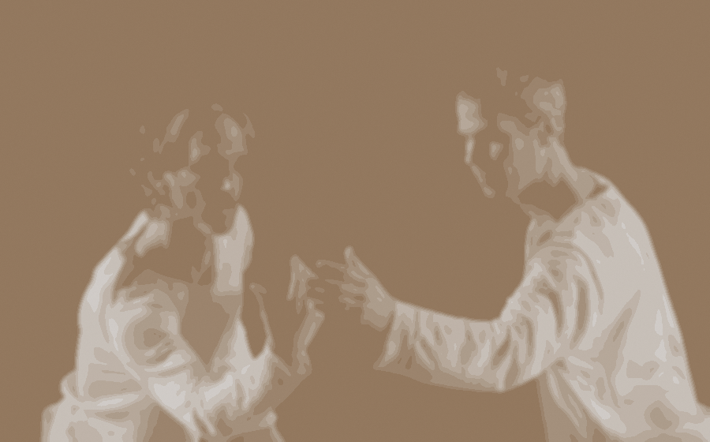